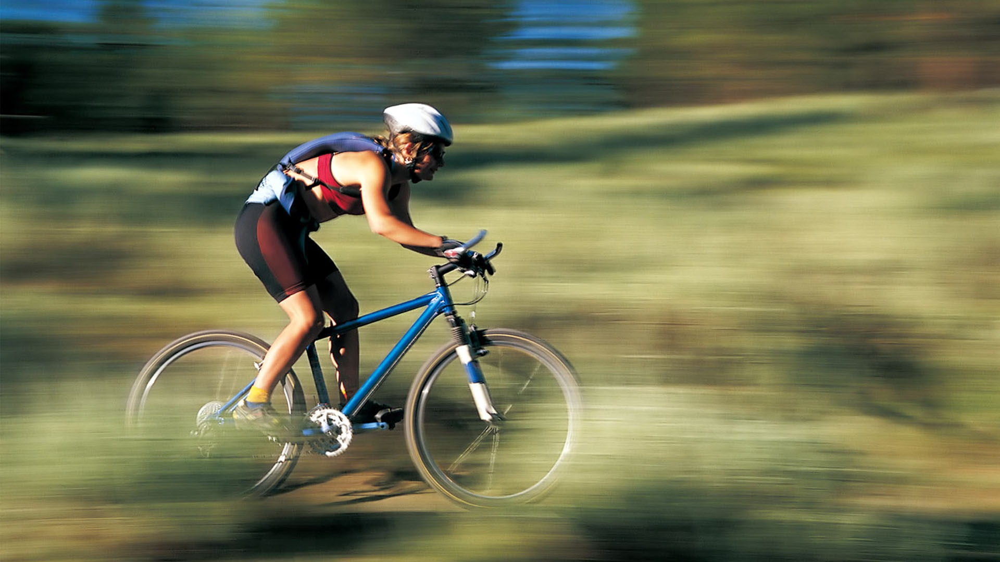

00:00:14:58
vandaag om 10:30Klassikaal alle projecten beluisteren en evalueren tot en met morgen doorgaan.
Individueel items beluisteren en bevindingen noteren
Individueel items beluisteren en bevindingen noteren
Individueel items beluisteren en bevindingen noteren
Individueel items beluisteren en bevindingen noteren
Valverde wint zesde rit in Ronde van Spanje
De 29-jarige Luxemburger van Trek kwam afgelopen zomer zwaar ten val tijdens de derde etappe in de Ronde van Frankrijk. De klimmer liep daarbij onder meer scheurtjes in de kniebanden op. "Het is niet een beslissing die ik heb genomen, maar mijn knie", doelde een geëmotioneerde Schleck op zijn fysieke problemen. "Ik ben altijd teruggekomen van tegenslag, maar nu is dat onmogelijk." "De pijn kwam steeds maar weer terug. Het fietsen zit erop voor mij, in elk geval in professionele zin. Ik wil mijn ploeg Trek bedanken dat ze altijd achter me zijn blijven staan."
Bondscoach Guus Hiddink had 25 spelers geselecteerd voor de interlandperiode waarin Oranje maandag ook tegen IJsland speelt. De reglementen van de UEFA schrijven voor dat er maar 23 spelers voor een wedstrijd ingeschreven mogen worden.
Daardoor zitten Van Dijk en Pieters vrijdag op de tribune. De KNVB moet daags voor de wedstrijd voor 12 uur de definitieve spelerslijst doorgeven. Ook bij een blessuregeval van de eerste 23 mogen Van Dijk en Pieters niet in actie komen.